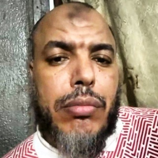

موقع توثيقي مستقل يجمع شهادات المتضررين، والتسجيلات الموثقة، ومسار الدعاوى القضائية، وحلقات «سلسلة النصابي» للباحث سفيان إعلوشن؛ نصحاً للمسلمين، وحفظاً للأموال والأعراض، وتحذيراً من الانخداع بالمظاهر المتسترة بالدين.

مطلوب للعدالة والحقوقالاسم الحقيقي: علي عوض المصري
تستر بالخطاب الشرعي والمظهر المنهجي للاعتداء على أموال وأعراض المسلمين، واعتمد تدوير الأموال، والتهديد بالقتل، وقذف المحصنات لإرهاب ضحاياه وتبرير غمط حقوقهم.
سلسلة استقصائية موثقة قدمها الباحث سفيان إعلوشن كشف فيها بالشهود والوثائق عمليات النصب المنسوبة لمن يلقب نفسه بـ«الجنرال المنهجي».
محمد ومازن — سوري ولبناني مقيمان في السويد — وثقا في النقادي بسبب مظهره الشرعي وخطابه المنهجي، فسلماه 100,000 دولار لمشروع استثماري في تجارة «سماد اليوريا»، ليتبين أنه مشروع وهمي لا وجود له. المماطلة والتسويف والتهرب حتى اليأس.
محمد (سوري الجنسية) ومازن (لبناني الجنسية)، شابان مقيمان في مملكة السويد عملا لسنوات طويلة لجمع مدخراتهما بهدف استثمارها في مشروع تجاري مشروع ونزيه يخدم مصالح المسلمين.
تعرف الضحيتان على أبي عبيدة النقادي عبر منصات التواصل الاجتماعي؛ حيث كان يقدم نفسه كرجل أعمال ذي خبرة واسعة في الأسواق الإفريقية، متستراً بالخطاب السلفي المنهجي والحديث المستمر في نصرة قضايا الأمة، مما بنى لديهما ثقة عمياء مطلقة.
عرض النقادي عليهما الدخول في شراكة استثمارية لاستيراد وتوزيع سماد اليوريا في دول غرب إفريقيا (توغو وجوارها)، مؤكداً وجود عقود حكومية وتجارية جاهزة للتنفيذ، مع وعود بأرباح مجزية واسترداد رأس المال في فترات قياسية، وقدم لهما أوراقاً وعقوداً تبين لاحقاً أنها صورية ولا أصل لها على أرض الواقع.
بناءً على تلك الوعود، حول الشابان مبالغ إجمالية بلغت 100,000 دولار أمريكي عبر دفعات وحوالات مالية. وبمجرد استلام النقادي للمبالغ كاملة، بدأت مرحلة الاستنزاف البارد:
شاب مغربي كان يعمل في شركة مرموقة، أقنعه النقادي بترك وظيفته وسلبه 17,000 دولار كحصة في مشروع تجاري، ثم استعبده في إفريقيا وتركه مديوناً في دوامة من الأكاذيب والتهديدات بالتشهير.
شاب مغربي مستقيم ومجد، كان يشغل منصباً وظيفياً مرموقاً وذا دخل محترم في إحدى الشركات المعروفة بالمغرب، ويتمتع بسمعة مهنية طيبة واستقرار عائلي.
تواصل النقادي مع الشاب وأقنعه عبر محادثات مطولة بأن الوظيفة النظامية هي عبودية معاصرة تحول بين المسلم وتحقيق استقلاله المالي، وحثه على الهجرة إلى إفريقيا للمساهمة في بناء مشاريع زراعية واقتصادية إسلامية، واعداً إياه بأن يكون شريكاً أساسياً في مشاريع استثمارية واعدة (كزراعة وتجارة الصويا).
استجاب الشاب لنصائح النقادي مدفوعاً بحسن ظنه؛ فقدم استقالته من عمله وسحب كافة مدخراته البالغة 17,000 دولار أمريكي وسلمها للنقادي كحصة في رأس مال المشروع المشترك، ثم سافر إلى غرب إفريقيا لبدء العمل الميداني.
عند وصول الشاب إلى إفريقيا صُدم بالواقع؛ فلا مشاريع قائمة، ولا تجهيزات، ولا شركاء:
شهادة استثنائية للشيخ يوشع كولي ساما — إمام وخطيب وداعية في توغو — استضاف النقادي في بيته ومحيطه أكثر من 10 سنوات. يكشف فيها حقيقة تعاملاته، ويدعوه للتوبة ورد المظالم.
الشيخ يوشع كولي ساما، من أبرز الدعاة والأئمة والخطباء المعروفين في جمهورية توغو وغرب إفريقيا، ومشهود له بالفضل والرسوخ والنزاهة وحسن السيرة بين عامة المسلمين وخاصتهم.
استقبل الشيخ يوشع أبا عبيدة النقادي في منزله ومحيطه الخاص وتكفل به وبشؤونه لأكثر من 10 سنوات كاملة، انطلاقاً من واجب إكرام المسلم الغريب ونصرة طالب العلم، واعتبره فرداً من أسرته وأتاح له التواصل مع المجتمع المحلي والمراكز الإسلامية.
أدلى الشيخ يوشع بشهادة صادمة وموثقة تكشف حقيقة السجل الجنائي للنقادي في توغو:
تميزت شهادة الشيخ يوشع بأنها لم تنطلق من دافع تشهير أو خصومة شخصية، بل كانت نصحاً شرعياً واجباً؛ حيث وجه نداءً علنياً مباشراً للنقادي تضمن:
الحلقة الأخطر — كيف استولى النقادي على ما يزيد عن مليوني دولار من مستثمرين ورجال أعمال ومغتربين بدعوى مشاريع دولية في سماد اليوريا وغيرها، ثم تبخرت الأموال كلها بين عقود صورية وشركات وهمية وأكاذيب متلاحقة.
تفكك هذه الحلقة الملف الأضخم والأخطر في سجل احتيال النقادي؛ حيث أثبتت التحقيقات الاستقصائية استيلاءه على مبالغ مالية مجمعة تتجاوز 2,000,000 دولار أمريكي (مليوني دولار) من عشرات الضحايا ورجال الأعمال والمغتربين المقيمين في دول الخليج وأوروبا.
بين الباحث سفيان إعلوشن الآلية التي اتبعها النقادي لإدارة هذه الكتلة المالية الضخمة وإخفائها:
كشفت الحلقة الجانب المظلم والأخطر من سلوك النقادي عند محاصرته بالأدلة؛ فبدلاً من رد الحقوق أو الاعتذار، يشن حرباً انتقامية شرسة ضد كل من يطالب بماله:
نمط سلوكي متكرر وثقه الضحايا والشهود — تبيّنْ قبل أن تصيب قوما بجهالة!
اعتاد التمسح بالعلماء والمشاهير لإضفاء شرعية مصطنعة على نفسه واستدراج الضحايا. وحين ارتضى شريكه التحاكم للشيخ الشريف الحسن بن علي الكتاني (رئيس رابطة علماء المغرب العربي)، هرب النقادي من تقديم الدفاتر والحسابات، وغلّظ القول، ثم حظر الشاكي وتوعده؛ فشهد الشيخ الكتاني بما جرى.
يعاني من تضخم نرجسي مريع واستعلاء أجوف؛ ومنهجه العملي الموثق بالقناة: "لا تعتذر أبدًا، لا تتراجع أبدًا، لا تعترف بالخطأ، انكر كل شيء، واهجم ثم اهجم". يرى نفسه معصوماً فوق المحاسبة، ويلقب نفسه بـ«الجنرال المنهجي» مصوراً نفسه ضحية مؤامرة كونية لتبرير خياناته وسرقة أموال الناس.
تجاوزت جرائمه أكل أموال الناس بالباطل إلى التهديد الجنائي الصريح؛ حيث وثقت له تسجيلات صوتية يهدد فيها بقتل وتصفية خصومه قائلاً: "سأقتلهم خطأ!"، معلناً استعداده لدفع مئات آلاف الدولارات في الأذى الأمني والتسول لدفع الرشاوى للزج بالضحايا في السجون بدلاً من رد أموالهم.
جبن عن المواجهة المباشرة بهويته الحقيقية؛ فلجأ إلى معرفات وحسابات مستعارة على تليجرام (فضحتها خواص التطبيق برقم هاتفه كمعرف Godwin braquage وغيره) للخوض في أعراض أمهات وزوجات أصحاب الحقوق، وقذف المحصنات بأقذع الألفاظ والشتائم الباطلة التي يعجز عن قولها علناً.
أنشأ قناة لبث محاضرات "اقتصاد واستثمار" اتسمت بالجهل المطبق والتضليل؛ كترويجه لأرقام مستحيلة عقلاً كادعاء امتلاك عائلة واحدة 500 تريليون دولار (وهو ما يتجاوز كامل ثروة كوكب الأرض!)، وتسطيح الاقتصاد بنظريات المؤامرة الساذجة لدغدغة عواطف الشباب وإيهامهم بالحنكة لاصطيادهم.
دخل في مشاريع وتجارات دولية كبرى لا يحسن فيها شيئاً، وتكبر بعنجهية على من يحسنونها ورفض نصح واستشارة أهل الاختصاص والخبرة، مما قاد إلى أخطاء فادحة وكوارث مالية متتالية.
تلاعب بأموال الناس واستثماراتهم وتصرف في رؤوس الأموال بغير إذن أصحابها ولا رضاهم في محاولات يائسة لتغطية عثراته وسد ثغرات مشاريعه الخاسرة.
أخفى سرقة وضياع سلعة عظيمة من سماد اليوريا، وتكتم على الكارثة بالتدليس والكذب على الشركاء والمستثمرين لشهور طويلة بدلاً من مصارحتهم وتحمل المسؤولية.
أراد المحافظة على ثقة مصطنعة ومظهر التاجر الناجح؛ فكان يعطي أشخاصاً قدامى من أموال أشخاص آخرين جدد، كما فرض الربا الصريح على شريكه عبد الله لصالحه هو.
اعتمد سياسة ظالمة؛ فكان يعطي القوي ومن يخشى صوته وفضيحته أو سطوته ليسكته، بينما يغمط ويهضم حقوق الضعفاء والمغتربين المستضعفين الذين لا صوت لهم.
كلما طالبه أحد بحقه واجهه بسيل من الكذب واختلاق القصص الخيالية، ثم ينقلب إلى السباب الفاحش والطعن في أعراض أصحاب الحقوق وقذف محصناتهم لإرهابهم وتبرير غمط أموالهم.
قناة تليجرام توثيقية تضم أكثر من 1600 تدوينة، و370 صورة ووثيقة، و103 تسجيل مرئي وصوتي.
أرسل شهادتك وتوثيقك ليتم نشرها في القناة دون أي إشارة لحسابك أو معلوماتك الشخصية وبسرية تامة:
افتح البوت @SendTestimonyBot